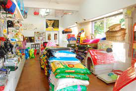

Tu mascota es nuestra prioridad.
Desde 1997 brindamos la mejor atención veterinaria para tu mascota. Para ello, seleccionamos los mejores profesionales veterinarios, quienes continúan en capacitación y formación constante, para darle la más cálida y profesional atención a tu mascota..
Brindamos servicios de medicina interna, medicina preventiva, análisis clínicos, cirugía y oncología.
